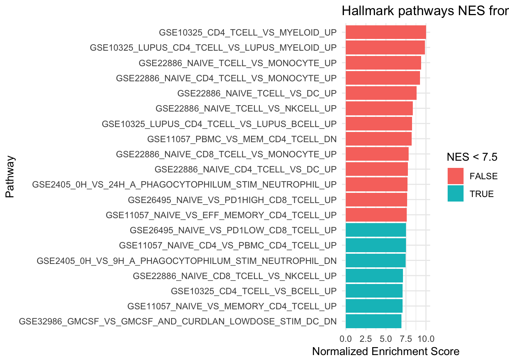

Last updated: 2019-07-29
Checks: 7 0
Knit directory: scRNA-seq-workshop-Fall-2019/
This reproducible R Markdown analysis was created with workflowr (version 1.4.0). The Checks tab describes the reproducibility checks that were applied when the results were created. The Past versions tab lists the development history.
Great! Since the R Markdown file has been committed to the Git repository, you know the exact version of the code that produced these results.
Great job! The global environment was empty. Objects defined in the global environment can affect the analysis in your R Markdown file in unknown ways. For reproduciblity it’s best to always run the code in an empty environment.
The command set.seed(20190718) was run prior to running the code in the R Markdown file. Setting a seed ensures that any results that rely on randomness, e.g. subsampling or permutations, are reproducible.
Great job! Recording the operating system, R version, and package versions is critical for reproducibility.
Nice! There were no cached chunks for this analysis, so you can be confident that you successfully produced the results during this run.
Great job! Using relative paths to the files within your workflowr project makes it easier to run your code on other machines.
Great! You are using Git for version control. Tracking code development and connecting the code version to the results is critical for reproducibility. The version displayed above was the version of the Git repository at the time these results were generated.
Note that you need to be careful to ensure that all relevant files for the analysis have been committed to Git prior to generating the results (you can use wflow_publish or wflow_git_commit). workflowr only checks the R Markdown file, but you know if there are other scripts or data files that it depends on. Below is the status of the Git repository when the results were generated:
Ignored files:
Ignored: .DS_Store
Ignored: .Rhistory
Ignored: .Rproj.user/
Untracked files:
Untracked: analysis/scRNAseq_workshop_0.Rmd
Untracked: data/pbmc10k/
Untracked: data/pbmc5k/
Untracked: docs/img/
Unstaged changes:
Modified: analysis/scRNAseq_workshop_1.Rmd
Modified: analysis/scRNAseq_workshop_2.Rmd
Note that any generated files, e.g. HTML, png, CSS, etc., are not included in this status report because it is ok for generated content to have uncommitted changes.
There are no past versions. Publish this analysis with wflow_publish() to start tracking its development.
library(Seurat)Warning: package 'Seurat' was built under R version 3.5.2pbmc<- readRDS("data/pbmc5k/pbmc_5k_v3.rds")
# for GSEA, we need the information of all genes, Seurat is just too slow if we test
# all 20,000 genes. instead let's try presto which performs a fast Wilcoxon rank sum test
#library(devtools)
#install_github('immunogenomics/presto')
library(presto)Loading required package: Rcpppbmc.genes <- wilcoxauc(pbmc, 'seurat_clusters')
head(pbmc.genes) feature group avgExpr logFC statistic auc
1 AL627309.1 0 0.005441269 -0.0039398743 2111934 0.4972455
2 AL627309.3 0 0.000000000 -0.0004917936 2122351 0.4996982
3 AL669831.5 0 0.058406758 -0.0098809068 2078179 0.4892981
4 FAM87B 0 0.000000000 -0.0017569714 2117864 0.4986417
5 LINC00115 0 0.033673117 -0.0053392639 2086692 0.4913023
6 FAM41C 0 0.015977393 -0.0161927551 2074044 0.4883245
pval padj pct_in pct_out
1 0.0960505617 0.1578387500 0.624025 1.17718080
2 0.3791408832 0.4752158709 0.000000 0.06036825
3 0.0201543483 0.0399747053 6.864275 9.20615756
4 0.0618111058 0.1073170552 0.000000 0.27165711
5 0.0159900126 0.0323571319 3.744150 5.58406278
6 0.0001773787 0.0004981502 2.028081 4.37669786# we have all the genes for each cluster
dplyr::count(pbmc.genes, group)# A tibble: 14 x 2
group n
<chr> <int>
1 0 18791
2 1 18791
3 10 18791
4 11 18791
5 12 18791
6 13 18791
7 2 18791
8 3 18791
9 4 18791
10 5 18791
11 6 18791
12 7 18791
13 8 18791
14 9 18791To do Gene set enrichment analysis, we need to have the annotated gene set first. One popular source is the MsigDB from Broad Institute.
fgsealibrary(msigdbr)Loading required package: dplyrWarning: package 'dplyr' was built under R version 3.5.2
Attaching package: 'dplyr'The following objects are masked from 'package:stats':
filter, lagThe following objects are masked from 'package:base':
intersect, setdiff, setequal, unionLoading required package: tibbleWarning: package 'tibble' was built under R version 3.5.2library(fgsea)
library(dplyr)
library(ggplot2)
msigdbr_show_species() [1] "Bos taurus" "Caenorhabditis elegans"
[3] "Canis lupus familiaris" "Danio rerio"
[5] "Drosophila melanogaster" "Gallus gallus"
[7] "Homo sapiens" "Mus musculus"
[9] "Rattus norvegicus" "Saccharomyces cerevisiae"
[11] "Sus scrofa" m_df<- msigdbr(species = "Homo sapiens", category = "C7")
head(m_df)# A tibble: 6 x 9
gs_name gs_id gs_cat gs_subcat human_gene_symb… species_name entrez_gene
<chr> <chr> <chr> <chr> <chr> <chr> <int>
1 GOLDRA… M3044 C7 "" ABCA2 Homo sapiens 20
2 GOLDRA… M3044 C7 "" ABCC5 Homo sapiens 10057
3 GOLDRA… M3044 C7 "" ABHD14A Homo sapiens 25864
4 GOLDRA… M3044 C7 "" ACADM Homo sapiens 34
5 GOLDRA… M3044 C7 "" ACP5 Homo sapiens 54
6 GOLDRA… M3044 C7 "" ACP6 Homo sapiens 51205
# … with 2 more variables: gene_symbol <chr>, sources <chr>fgsea_sets<- m_df %>% split(x = .$gene_symbol, f = .$gs_name)
fgsea_sets$GSE11057_NAIVE_VS_MEMORY_CD4_TCELL_UP [1] "ABLIM1" "ACER1" "ACPL2" "AEBP1"
[5] "AGRN" "AIF1" "ALG10B" "AMN1"
[9] "ANKRD36BP2" "APBA2" "APBB1" "ARMCX2"
[13] "BACH2" "BEND5" "BNIP3L" "BTBD3"
[17] "C10orf58" "C12orf23" "C1orf145" "C6orf170"
[21] "C6orf48" "CA6" "CADPS2" "CAMK4"
[25] "CD248" "CD55" "CENPV" "CEP41"
[29] "CHI3L2" "CHML" "CHMP7" "CIAPIN1"
[33] "CLCN5" "COL5A2" "CRLF3" "CYHR1"
[37] "DDR1" "DFNB59" "DNHD1" "DNTT"
[41] "DSC1" "EDAR" "EEA1" "EFNA1"
[45] "ENGASE" "EXPH5" "FAM113B" "FAM134B"
[49] "FCGRT" "FLJ13197" "GAL3ST4" "GNAI1"
[53] "GP5" "GPR125" "GPR160" "GPRASP1"
[57] "GPRASP2" "GPRC5B" "HEMGN" "HIPK2"
[61] "HSF2" "IGF1R" "IGIP" "ITGA6"
[65] "KCNQ5" "KCTD3" "KLHDC1" "KLHL13"
[69] "KLHL24" "KRT18" "KRT2" "KRT72"
[73] "KRT73" "LINC00282" "LMLN" "LOC100286937"
[77] "LOC100287237" "LOC100289019" "LOC100507218" "LOC282997"
[81] "LOC283887" "LOC284023" "LOC346887" "LOC439949"
[85] "LOC440104" "LOC641518" "LOC644794" "LOC646762"
[89] "LOC646808" "LPHN1" "LRRN3" "MALL"
[93] "MAML2" "MANSC1" "ME3" "MEF2A"
[97] "MEST" "METAP1D" "MIR101-1" "MIR600HG"
[101] "MLXIP" "MPP1" "MPP7" "MRPL45P2"
[105] "MYB" "MZF1" "NAA16" "NBEA"
[109] "NDFIP1" "NET1" "NPAS2" "NPM3"
[113] "NSUN5" "NUCB2" "NUDT12" "NUDT17"
[117] "PADI4" "PCSK5" "PDE3B" "PDE7A"
[121] "PDE7B" "PDE9A" "PDK1" "PECAM1"
[125] "PHGDH" "PIGL" "PIK3CD" "PIK3IP1"
[129] "PITPNM2" "PKIG" "PLA2G12A" "PLAG1"
[133] "PLLP" "PRRT1" "PTPRK" "RAPGEF6"
[137] "REG4" "RGS10" "RHPN2" "RIN3"
[141] "RNF175" "ROBO3" "SATB1" "SCAI"
[145] "SCARB1" "SCML1" "SCML2" "SERPINE2"
[149] "SERTAD2" "SERTM1" "SETD1B" "SFMBT2"
[153] "SFXN2" "SGK223" "SH3RF3" "SIAH1"
[157] "SLC11A2" "SLC25A37" "SLC29A2" "SLC2A11"
[161] "SMPD1" "SNORD104" "SNPH" "SNRPN"
[165] "SNX9" "SORCS3" "SPPL2B" "SREBF1"
[169] "STAP1" "STK17A" "TAF4B" "TARBP1"
[173] "TGFBR2" "TIMP2" "TLE2" "TMEM170B"
[177] "TMEM220" "TMEM41B" "TMEM48" "TMIGD2"
[181] "TOM1L2" "TSPAN3" "TTC28" "TUG1"
[185] "UBE2E2" "USP44" "VPS52" "ZC4H2"
[189] "ZMYND8" "ZNF182" "ZNF229" "ZNF238"
[193] "ZNF496" "ZNF506" "ZNF516" "ZNF546"
[197] "ZNF563" "ZNF662" "ZNF780B" "ZNRD1-AS1" The fgsea() function requires a list of gene sets to check, and a named vector of gene-level statistics, where the names should be the same as the gene names in the pathways list. First, let’s create our named vector of test statistics. See ?tibble::deframe for help here - deframe() converts two-column data frames to a named vector or list, using the first column as name and the second column as value. I copied some code from https://stephenturner.github.io/deseq-to-fgsea/
# Naive CD4+ T cells
pbmc.genes %>%
dplyr::filter(group == "0") %>%
arrange(desc(logFC), desc(auc)) %>%
head(n = 10) feature group avgExpr logFC statistic auc pval
1 LDHB 0 2.237079 1.1313172 3720734 0.8760304 0.000000e+00
2 TRAC 0 1.998718 1.1093173 3280268 0.7723246 2.917922e-193
3 CD3E 0 1.875625 1.0529526 3311352 0.7796431 9.625101e-204
4 TCF7 0 1.587238 1.0255404 3586950 0.8445316 0.000000e+00
5 LTB 0 2.393230 1.0036746 3028868 0.7131337 2.244504e-113
6 CD3D 0 1.730219 0.9411404 3208290 0.7553776 6.267795e-172
7 CCR7 0 1.180417 0.9300371 3603946 0.8485333 0.000000e+00
8 IL7R 0 1.649311 0.8914322 3104348 0.7309051 3.329368e-148
9 SARAF 0 2.226600 0.8481803 3713555 0.8743401 0.000000e+00
10 TRABD2A 0 1.043007 0.8444002 3548526 0.8354848 0.000000e+00
padj pct_in pct_out
1 0.000000e+00 98.75195 74.97736
2 5.030337e-191 97.42590 45.27618
3 1.826922e-201 97.97192 44.97434
4 0.000000e+00 94.69579 44.00845
5 1.794743e-111 98.75195 65.34863
6 9.273869e-170 96.80187 42.92182
7 0.000000e+00 85.56942 22.69846
8 3.959630e-146 88.92356 35.79837
9 0.000000e+00 99.14197 89.37519
10 0.000000e+00 80.18721 19.52913# we feel assured to see IL7R and CCR7 which are marker genes for naive CD4+ T cells
# select only the feature and auc columns for fgsea, which statistics to use is an open question
cluster0.genes<- pbmc.genes %>%
dplyr::filter(group == "0") %>%
arrange(desc(auc)) %>%
dplyr::select(feature, auc)
ranks<- deframe(cluster0.genes)
head(ranks) RPL30 RPS3A RPS13 RPL35A RPL32 RPL11
0.9372499 0.9352810 0.9240511 0.9192642 0.9176527 0.9133020 fgseaRes<- fgsea(fgsea_sets, stats = ranks, nperm = 1000)Warning in fgsea(fgsea_sets, stats = ranks, nperm = 1000): There are ties in the preranked stats (21% of the list).
The order of those tied genes will be arbitrary, which may produce unexpected results.tidy the data a bit
fgseaResTidy <- fgseaRes %>%
as_tibble() %>%
arrange(desc(NES))
fgseaResTidy %>%
dplyr::select(-leadingEdge, -ES, -nMoreExtreme) %>%
arrange(padj) %>%
head()# A tibble: 6 x 5
pathway pval padj NES size
<chr> <dbl> <dbl> <dbl> <int>
1 GSE10325_CD4_TCELL_VS_MYELOID_UP 0.00121 0.00699 10.0 190
2 GSE10325_LUPUS_CD4_TCELL_VS_LUPUS_MYELOID_UP 0.00121 0.00699 9.88 188
3 GSE22886_NAIVE_TCELL_VS_MONOCYTE_UP 0.00122 0.00699 9.39 184
4 GSE22886_NAIVE_CD4_TCELL_VS_MONOCYTE_UP 0.00121 0.00699 9.26 188
5 GSE22886_NAIVE_TCELL_VS_DC_UP 0.00122 0.00699 8.81 183
6 GSE22886_NAIVE_TCELL_VS_NKCELL_UP 0.00126 0.00699 8.34 176# only plot the top 20 pathways
ggplot(fgseaResTidy %>% filter(padj < 0.008) %>% head(n= 20), aes(reorder(pathway, NES), NES)) +
geom_col(aes(fill= NES < 7.5)) +
coord_flip() +
labs(x="Pathway", y="Normalized Enrichment Score",
title="Hallmark pathways NES from GSEA") +
theme_minimal()
plotEnrichment(fgsea_sets[["GSE10325_CD4_TCELL_VS_MYELOID_UP"]],
ranks) + labs(title="GSE10325 CD4 TCELL VS MYELOID UP")How to read the figure ?
The X-axis is all your genes in the expriment (~ 20,000 in this case) pre-ranked by your metric. each black bar is the gene in this gene set(pathway). You have an idea where are the genes located in the pre-ranked list.
Enrichement Score (ES) is calcuated by some metric that ES is positive if the gene set is located in the top of the pre-ranked gene list. ES is negative if the gene set is located in the bottom of the pre-ranked gene list.
sessionInfo()R version 3.5.1 (2018-07-02)
Platform: x86_64-apple-darwin15.6.0 (64-bit)
Running under: macOS High Sierra 10.13.6
Matrix products: default
BLAS: /Library/Frameworks/R.framework/Versions/3.5/Resources/lib/libRblas.0.dylib
LAPACK: /Library/Frameworks/R.framework/Versions/3.5/Resources/lib/libRlapack.dylib
locale:
[1] en_US.UTF-8/en_US.UTF-8/en_US.UTF-8/C/en_US.UTF-8/en_US.UTF-8
attached base packages:
[1] stats graphics grDevices utils datasets methods base
other attached packages:
[1] ggplot2_3.1.0 fgsea_1.8.0 msigdbr_6.2.1 tibble_2.0.1 dplyr_0.8.0.1
[6] presto_1.0.0 Rcpp_1.0.0 Seurat_3.0.2
loaded via a namespace (and not attached):
[1] tsne_0.1-3 nlme_3.1-137 bitops_1.0-6
[4] fs_1.2.6 RColorBrewer_1.1-2 httr_1.4.0
[7] rprojroot_1.3-2 sctransform_0.2.0 tools_3.5.1
[10] backports_1.1.3 utf8_1.1.4 R6_2.3.0
[13] irlba_2.3.2 KernSmooth_2.23-15 lazyeval_0.2.1
[16] colorspace_1.4-1 withr_2.1.2 npsurv_0.4-0
[19] tidyselect_0.2.5 gridExtra_2.3 compiler_3.5.1
[22] git2r_0.23.0 cli_1.0.1 plotly_4.8.0
[25] labeling_0.3 caTools_1.17.1.1 scales_1.0.0
[28] lmtest_0.9-36 ggridges_0.5.1 pbapply_1.3-4
[31] stringr_1.3.1 digest_0.6.18 rmarkdown_1.11
[34] R.utils_2.7.0 pkgconfig_2.0.2 htmltools_0.3.6
[37] bibtex_0.4.2 htmlwidgets_1.3 rlang_0.3.1
[40] zoo_1.8-4 jsonlite_1.6 BiocParallel_1.16.2
[43] ica_1.0-2 gtools_3.8.1 R.oo_1.22.0
[46] magrittr_1.5 Matrix_1.2-15 fansi_0.4.0
[49] munsell_0.5.0 ape_5.2 reticulate_1.10
[52] R.methodsS3_1.7.1 stringi_1.2.4 yaml_2.2.0
[55] gbRd_0.4-11 MASS_7.3-51.1 gplots_3.0.1
[58] Rtsne_0.15 plyr_1.8.4 grid_3.5.1
[61] parallel_3.5.1 gdata_2.18.0 listenv_0.7.0
[64] ggrepel_0.8.0 crayon_1.3.4 lattice_0.20-38
[67] cowplot_0.9.3 splines_3.5.1 SDMTools_1.1-221
[70] knitr_1.21 pillar_1.3.1 igraph_1.2.2
[73] future.apply_1.0.1 reshape2_1.4.3 codetools_0.2-16
[76] fastmatch_1.1-0 glue_1.3.0 evaluate_0.12
[79] lsei_1.2-0 metap_1.0 data.table_1.11.8
[82] png_0.1-7 Rdpack_0.10-1 gtable_0.2.0
[85] RANN_2.6 purrr_0.2.5 tidyr_0.8.2
[88] future_1.10.0 assertthat_0.2.0 xfun_0.4
[91] rsvd_1.0.0 survival_2.43-3 viridisLite_0.3.0
[94] workflowr_1.4.0 cluster_2.0.7-1 globals_0.12.4
[97] fitdistrplus_1.0-11 ROCR_1.0-7